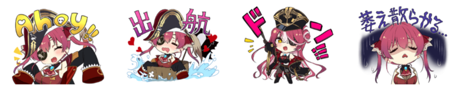
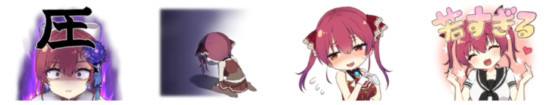
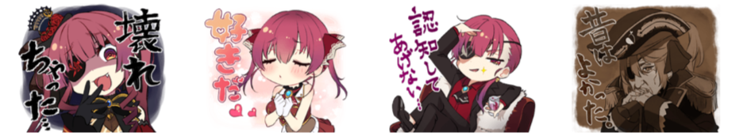

寶鐘瑪琳 Line 貼圖翻譯
船長自己畫的貼圖上架啦！

船長在直播上說第一次上架還被 Line 打槍了 7 張，原因大概都是太色
我怎麼就一點都不意外呢
貼圖這邊買：hololive sticker “Houshou Marine”
瑪琳船長前幾天的昭和老人會十分有趣，經歷過 CRT 電視的人應該都被勾起回憶
那個 4:3 的螢幕比例、畫質、字幕、舞步、選曲、主持人說話的風格都十分講究
想起來以前圍在電視前面看超級變變變的時候，而且來賓陣容也很大

| 貼圖內容 | 讀音 | 說明 |
|---|---|---|
| Ahoy!! | - | 招牌招呼聲 |
| ♥♥出航♥♥ | shu kkou しゅっこう |
船長的出航意思和字面不太一樣 |
| ドン!!! | don どん |
咚！！！（狀聲詞） |
| 萎え散らかる… | na e chi rakaru なえちらかる |
我枯萎了 |
| 貼圖內容 | 讀音 | 說明 |
|---|---|---|
| 赦します♥ | yuru shi ma su ゆるします |
赦免你的罪 |
| 申し訳ありません | mou shi wake ari mase n もうしわけありません |
非常抱歉 |
| くだた〜い♥♥ | ku da ta i くだたい |
想要♥♥ |
| - | - | - |
| 貼圖內容 | 發音 | 說明 |
|---|---|---|
| ？？？？？？ | - | ？？？？？？ |
| 絆を思い出して？ | kizuna wo omo i da shi te きずなをおもいだして |
快想想我們的羈絆 |
| わからせたるワ!!(シュツ) | wakara se taru wa (syu tu) わからせたるわ(しゅつ) |
我不知道啦！開火！ |
| － | - | - |

| 貼圖內容 | 讀音 | 說明 |
|---|---|---|
| 圧 | atu あつ |
施壓 |
| - | - | - |
| - | - | - |
| 若すぎる♥ | waka su gi ru わかすぎる |
真年輕♥ |

| 貼圖內容 | 讀音 | 說明 |
|---|---|---|
| 壞れちゃった… | kowa re cha ttu ta こわれちゃった |
壞掉了 |
| 好きだ♥♥ | su ki da すきだ |
喜歡♥♥ |
| 認知してあげない… | ninchi shi te a ge na i にんちしてあげない |
我可不承認… |
| 昔はよかった | mukasi ha yo ka ttu ta むかしはよかった |
以前真好啊 |
| 貼圖內容 | 讀音 | 說明 |
|---|---|---|
| いいじゃな〜い ♥♥ | i i jya na i いいじゃな〜い |
不是挺好的嗎 |
| 悔い改まよ!! | ku i arata ma yo くいあらてまよ |
懺悔吧 |
| 說明してみろ | akaru shi te mi ro あかるしてみろ |
給我說明清楚 |
| かしこマリン | kashiko marin かしこマリン |
瑪琳說再見 |
維持 Hololive 貼圖一貫很多內梗的風格，不是推船長的人很多梗實在不清楚
如果收的人也不是一味大概也是會一頭霧水吧
買貼圖是支持大於實用